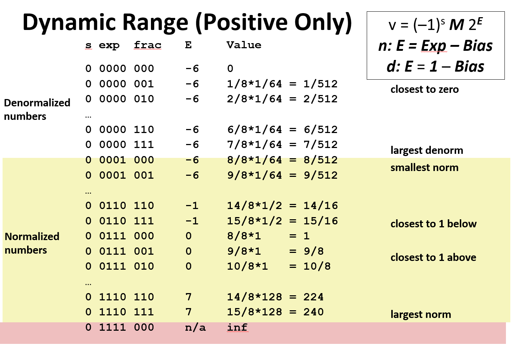
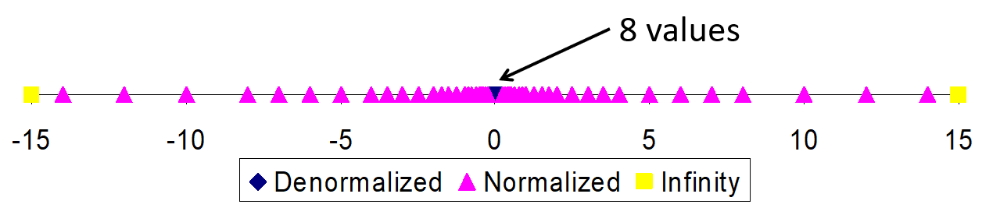
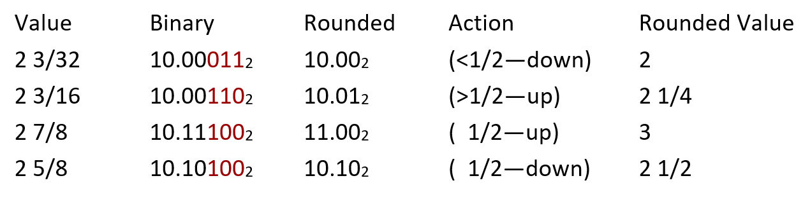

CSAPP - 学习笔记 (2): 浮点数
摘要
本文介绍了 CSAPP 的第二节，浮点数，介绍了如何用二进制表示小数以及 IEEE 的浮点数标准。
二进制小数
使用二进制小数点分割整数和小数部分，小数点左侧为非负幂，右侧为负幂，例如：
- 5 3/4，浮点表示为 \(101.11_2\)
- 2 7/8，浮点表示为 \(10.111_2\)
- 1 7/16，表示为 \(1.0111_2\) 可以观察到
- 除以 2 等价于右移
- 乘 2 等价于左移
- 形如 \(0.1111\cdots\) 的数只小于 1.0
- \(1/2+1/4+\cdots+1/2^i+\cdots \rightarrow 1.0\)
- 记作 \(1.0-\epsilon\)
局限性
- 只能精确表示形如 \(x/2^k\) 的小数部分（或它们的和）
- 其他有理数存在无限循环，无法精确表示
- w 位数的表示范围受限
- 需要权衡整数范围和小数部分的精度
IEEE 浮点数
在 1985 年之前，每个计算机厂商有自己的浮点数实现，不同硬件上程序的执行完全无法预测，群魔乱舞。1985 年，IEEE 提出了标准化的浮点数表示，得到了制造商的一致采用。
形式
使用一种类似科学计数法的形式表示浮点数，形式如下： \[ (-1)^SM\ 2^E \]
- \(S\) 是符号位，决定正负
- 尾数 \(M\in [1.0,2.0)\) 是二进制小数，记为 frac
- 指数 \(E\) 表示 2 的指数，记为 exp
精度
IEEE 提供了两种精度的浮点数
- 单精度（32 bits）：1 位 S，8 位 E，23 位 M
- 双精度（64 bits）：1 位 S，11 位 E，52 位 M
规格化的值
当 exp 的位模式不全为 1 且不全为 0 时，就属于这种情况，这是最普遍的情况。这种情况下：
指数 exp 被解释为偏置形式的有符号数，即 \(E=e-Bias\)，其中 \(e\) 是无符号整数，其位表示为 \(e_{k-1}\cdots e_1e_0\)，\(Bias=2^{k-1}-1\) 是一个偏置值。由此产生的精度范围，单精度是 - 126+127，双精度是 - 10221023。
- 以单精度为例，1 对应 - 126，254 对应 127。注意全 0 和全 1 不属于这种情况。
- 不使用补码的原因是，这种偏置表示，可以将整个浮点数看做无符号整数比较大小。
- 以正数为例，指数大的更大，指数相同尾数大的更大，正好匹配从高到低位逐个比较大小的比较规则。
- 如果中间的 exp 部分也是有符号的话，就无法这样比较了。
小数字段 frac 被解释描述小数值 \(f\in [0,1)\)，其二进制为 \(0.f_{n-1}\cdots f_1f_0\)，也就是二进制小数点在最高有效位左边。尾数 M 定义为 \(M=1+f\)，也就是实际二进制应该为 \(1.f_{n-1}\cdots f_1f_0\)，也叫作隐含的 1 开头表示。这是由于总可以调整解码 E，使得 \(M\in [1.0,2.0)\)，那么就无需显式地表示这个 1。
非规格化的值
当 exp 的位模式全为 0 时，对应这种情况，这种情况下：
- \(E=1-Bias\)
- 这实现了非规格数到规格数的平滑过渡
- \(M=f\)，不包含隐式的 1 这种格式有两个用途：
- 用于表示 0。规格化的值中，总是有 \(M\ge 1\)，不能表示 0。+0.0 的位模式全部为 0：S、frac、exp 均为 0。当 S 为 1，剩余为 0 时，得到 - 0.0。根据 IEEE 的浮点格式，这两种 0 在某些方面不同，在某些方面被认为是相同的。
- 用于表示非常接近 0.0 的数，它们提供一种属性，被称为逐渐溢出。
特殊值
exp 全为 1 时，对应这种情况，这种情况下：
- 若小数域全为 0，根据符号位，分别是正无穷和负无穷，当浮点操作溢出时会出现。
- 小数域非 0，表示 NaN（Not a Number），即不是一个数，例如 \(\sqrt {-1}\) 或者 \(\infty-\infty\)。
例子
以 8 位浮点数为例，它的范围如下： 当 exp 全为 0 时，为非规格数
- frac 全为 0 时，代表 0
- frac 不为 0 时，尾数 \(M=f\)，没有隐含的 1，\(E=1-Bias=-6\)。随着 frac 增大 1，整个数值会增大 \(1/512\)。 当 exp 不全为 0 且不全为 1 时，为规格数
- \(E=e-Bias\)，当 \(e=1\) 时，\(E=-6\) 与非规格数的指数一致。
- \(M=1+f\)，隐含的 1，使得数值依然连续递增。 当 exp 全为 1 时，为特殊值，例如，无穷  以 6 bit（1sign + 3 exp + 2 frac）的 IEEE 浮点数为例，数据分布如下：  在 0 附近浮点数密集存在，数轴两侧逐渐稀疏。
优势
- 浮点数的 + 0 与整数 0 表示相同
- 浮点数几乎可以复用无符号整数的比较
- 需要先考虑符号位、-0、NaN 的问题，其他情况可以复用
舍入
在浮点数运算时，会先计算出精确值，再适配到给定位中，也就是舍入：
- 如果指数过大，可能会溢出
- 尾数精度的限制，可能会舍入 IEEE 规定了四种舍入方式：
- 向 0：1.5->1，-1.5->-1
- 向 \(-\infty\)：1.5->1，-1.5->-2
- 向 \(+\infty\)：1.5->2，-1.5->-1
- 向最近的偶数：四舍六入五取偶，1.4->1，1.5->2，2.5->2，-1.5->-2
- 0.5 特殊对待的原因是，统计上看，50% 应该舍，50% 应该入，所以根据奇偶性做不同动作
- 这是默认的舍入模式 这种舍入方式很容易可以推广到二进制，例如，把下面的二进制数保留 4 个有效位，根据有效位后的余数的大小，决定是舍还是入
- 如果余数最高位为 0，代表小于一半，舍
- 如果余数最高位为 1，其余位为 0，刚好一半，根据有效位最低位决定舍入（0 代表偶数，该舍，1 代表奇数该入）
- 剩余情况，进位 
乘法
\((–1)^{S_1} M_1\ 2^{E_1}\ \times\ (–1)^{S_2} M_2\ 2^{E_2}\) 精确结果是 \((-1)^SM\ 2^E\)，其中：
- 符号位：\(S=S_1 ^{\wedge} S_2\)
- 尾数：\(M=M_1+M_2\)
- 指数：\(E=E_1+E_2\) 进一步修正：
- 如果 \(M\ge 2\)，右移 1 位，指数 + 1
- 如果 E 超出范围，溢出
- 把 M 舍入到 frac 的精度 除法与之类似。
加法
加减法需要先对齐指数位（对齐二进制小数点），操作后再恢复，也需要考虑修正逻辑，这里略去。
数学性质
由于舍入和溢出的存在，浮点数的运算不满足结合律、分配律，这与整数运算不同。 以结合律为例：
- \((2e10+3.14)-2e10=0\)
- \(3.14+(2e10-2e10)=3.14\) 这是由于 \((2e10+3.14)\) 的时候，尾数根据精度做了舍入，3.14 被省去了。 对于乘法分配律：
- \((1e20*1e20)*1e-20= inf\)
- \(1e20*(1e20*1e-20)= 1e20\) 由于无穷的存在，也是不满足的。
C 语言中的浮点数
C 语言中，float 和 double 分别对应了 IEEE 的单精度、双精度浮点数。
转换
浮点数转换时，会更改 bit 表示，这与整数的转换是不同的（只更改解释逻辑）。 当浮点数和整数转换时，会根据尾数 frac 有效位和整数位数，决定是否需要舍入。例如，当 float 转 int 时，frac 23 位可以容纳在 32 位的 int 中，不会舍入。反过来，就需要对低 9 位进行舍入判断了。
- double/float → int
- 截断小数部分
- 向 0 舍入
- 当超出范围或者 NaN 时，未定义，通常设为 \(T_{min}\)
- int → double
- double 尾数有 53 位，精准转换，不会有精度丢失
- int → float
- 根据舍入模式对多余位进行处理